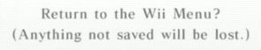

ARCHIVE
Tom Brier
Tom Brier is a prolific pianist who was deeply ingrained in the ragtime and boogie-woogie community for many years. He has hundreds of compositions to his name, but most know him for his incredible sightreading and improvisation skills.
I first discovered him years and years ago, when a video of him sightreading the Super Mario World ending theme circulated the internet. There exists a vast repertoire of his ragtime renditions of video game and other pop culture songs, usually arranged by his friend Ron O'Dell (Keeper1st) and performed by Tom, improvising prodigiously and bringing the tunes to life. I've archived a few of the performances that I think best capture Tom's talent and joyous personality.
|
The song that found me |
Rewriting the tune as he goes! |
|
A lively composition |
Soft and sweet |
You can also find a collection of renditions of Tom's compositions here. Quintessence is a personal favorite of mine.
In August of 2016, Tom was in a debilitating car accident. He miraculously survived, but it rendered him unable to walk, speak, or use his right hand very well. Though he may never again perform like he used to, he has touched the lives of many, and those who knew him describe him as the Mozart of Ragtime.
Recently, I found a video of him playing piano from 2019, surrounded by loved ones. I only hope that his future is long and always filled with this much support and love.
Tom is a huge inspiration to me as a performer, and thinking of him always emboldens me to deviate from the page. We're not robots, converting notes into sound, you know? What makes us human is our ability to ad lib, to swing, to syncopate, to have fun with it.
The least I can do in returning the favor is to help preserve his incredible legacy in whatever small way I can. If you'd like to take a crack at playing some fun ragtime yourself (you should do it!), here's Ron's collection: Keeper's VGM and Other Fun Sheet Music.
Dialga's Fight to the Finish!
|
| |
This song is a remix of a song with the same name from Pokemon Mystery Dungeon: Explorers of Time. It lived on the periphery of the microfamous Internet Checkpoint for a time, existing as a sanctuary for folks to post journals of their life and seek comfort in the words of their peers. That is until Nintendo took down the channel's entire catalogue with a barrage of copyright strikes.
I chose this song to back up rather than the "main" checkpoint because this one is just more meaningful to me. No matter how many times I loop it, it never gets old. And the tune got me through a lot of all-nighters in college. This is still my go-to song for when I really need to lock in.
If you want to learn more about the song's significance to the internet and my weeks-long search to find it after the takedown, I made a video about it in 2021.